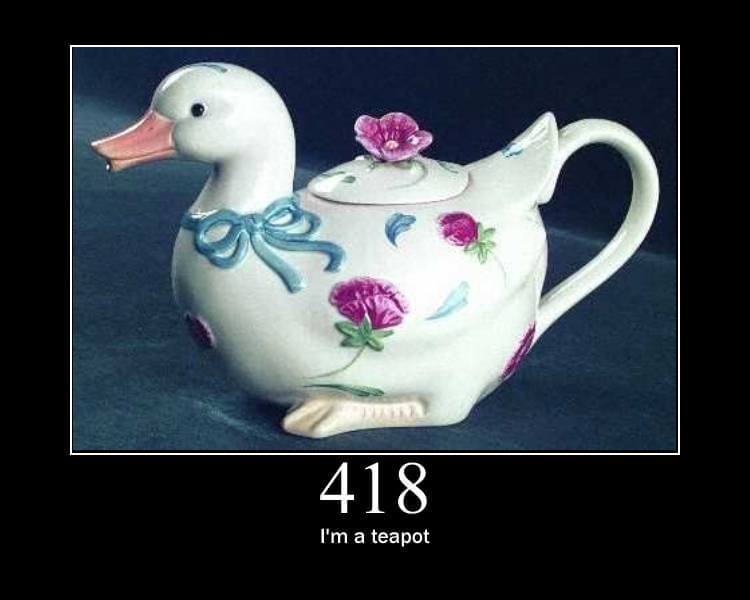

El protocolo HTTP
Antes de entrar en más materia, vamos a hablar de como realmente funciona la web; ya sea a través de un navegador o de una aplicación móvil, la comunicación entre el cliente y el servidor se realiza a través del protocolo HTTP (Hypertext Transfer Protocol) y la llamada World Wide Web (WWW).
Cuando se accede a una página web, el navegador envía una solicitud HTTP al servidor web que aloja la página. El servidor procesa la solicitud y devuelve una respuesta HTTP que contiene el contenido de la página web solicitada. Este proceso se repite cada vez que se accede a una nueva página o se realiza una acción en la web.
En este apartado veremos como funciona el protocolo HTTP y como se estructura la comunicación entre el cliente y el servidor, incluyendo los métodos HTTP, los códigos de estado y los encabezados de solicitud y respuesta.
URL (Uniform Resource Locator)
Antes de profundizar en el protocolo HTTP, es importante entender qué es una URL (Uniform Resource Locator) y cómo se utiliza para identificar recursos en la web. Una URL es una dirección que se utiliza para acceder a un recurso específico en Internet, como una página web, una imagen o un archivo.
Normalmente una URL tiene el siguiente formato:
http://www.ejemplo.com:80/ruta/al/recurso?parametro1=valor1¶metro2=valor2#fragmento
Esta URL se compone de varias partes:
- Protocolo: Indica el protocolo de comunicación que se utilizará para acceder al recurso. En este caso, es
http, pero también puede serhttpspara conexiones seguras. - Dominio: Es el nombre del servidor que aloja el recurso. En este caso, es
www.ejemplo.com. Normalmente se identifica por elfqdn(Fully Qualified Domain Name) que es el nombre completo del dominio. - Puerto: Es el número de puerto que se utilizará para la comunicación. En este caso, es
80, que es el puerto predeterminado para HTTP. Si no se especifica un puerto, se utilizará el puerto predeterminado según el protocolo. En caso de que el puerto sea el predeterminado, no es necesario especificarlo en la URL. - Ruta: Es la ubicación del recurso en el servidor. En este caso, es
/ruta/al/recurso. La ruta puede incluir subdirectorios y el nombre del archivo que se desea acceder. - Parámetros de consulta: Son pares clave-valor que se utilizan para enviar información adicional al servidor. En este caso, son
parametro1=valor1yparametro2=valor2. Los parámetros de consulta se separan del resto de la URL mediante el signo de interrogación?y se separan entre sí mediante el signo&. - Fragmento: Es una referencia a una sección específica del recurso. En este caso, es
#fragmento. El fragmento se utiliza para navegar a una parte específica de la página web y no se envía al servidor en la solicitud HTTP.
Info
Una URL también es identificado como URI (Uniform Resource Identifier), que es un identificador más general que puede incluir tanto URLs como URNs (Uniform Resource Names). En este curso, nos centraremos principalmente en las URLs, ya que son las más utilizadas para acceder a recursos en la web.
Estructura de una solicitud HTTP
Cuando se realiza una petición HTTP, el cliente envía una solicitud al servidor que incluye varios elementos, como el método HTTP, la URL del recurso solicitado, los encabezados de solicitud y, en algunos casos, un cuerpo de solicitud.
Veamos un ejemplo de solicitud HTTP:
GET /ruta/al/recurso HTTP/1.1
Host: www.ejemplo.com
Esta peticiñon podemos ver varias partes:
- Método HTTP: Indica la acción que se desea realizar sobre el recurso. En este caso, es
GET, que se utiliza para solicitar un recurso sin modificarlo. - URL del recurso: Es la ruta del recurso que se desea acceder. En este caso, es
/ruta/al/recurso. - Versión del protocolo HTTP: Indica la versión del protocolo HTTP que se está utilizando. En este caso, es
HTTP/1.1. - Encabezados de solicitud: Son pares clave-valor que proporcionan información adicional sobre la solicitud. En este caso, el encabezado
Hostindica el nombre del servidor al que se está enviando la solicitud.
Existen más contenido que podemos encontrar en una solicitud HTTP, como los parámetros de consulta, el cuerpo de la solicitud y los encabezados adicionales. Sin embargo, estos elementos no son obligatorios y pueden variar según el método HTTP utilizado y la naturaleza de la solicitud.
Verbos HTTP
Habrás podido identificar que a la hora de realizar una solicitud HTTP, se utiliza un verbo o método HTTP para indicar la acción que se desea realizar sobre el recurso. Los métodos HTTP también se conocen como verbos HTTP y son una parte fundamental del protocolo HTTP. Los métodos HTTP más comunes son:
- GET: Se utiliza para solicitar un recurso sin modificarlo. Es el método más común y se utiliza para acceder a páginas web, imágenes, archivos y otros recursos.
- POST: Se utiliza para enviar datos al servidor y crear un nuevo recurso. Es comúnmente utilizado en formularios web y en la creación de nuevos registros en bases de datos.
- PUT: Se utiliza para actualizar un recurso existente en el servidor. Es comúnmente utilizado en aplicaciones web y APIs RESTful para modificar recursos existentes.
- DELETE: Se utiliza para eliminar un recurso existente en el servidor. Es comúnmente utilizado en aplicaciones web y APIs RESTful para eliminar recursos existentes.
- HEAD: Se utiliza para solicitar los encabezados de un recurso sin descargar el cuerpo del recurso. Es útil para obtener información sobre un recurso sin necesidad de descargarlo.
- OPTIONS: Se utiliza para solicitar información sobre los métodos HTTP que son compatibles con un recurso específico. Es útil para determinar qué acciones se pueden realizar sobre un recurso antes de enviar una solicitud.
Info
Una API Restful (Representational State Transfer) es un estilo de arquitectura de software que utiliza los métodos HTTP para interactuar con recursos en la web. Las APIs RESTful son ampliamente utilizadas en aplicaciones web y móviles para permitir la comunicación entre el cliente y el servidor. Más adelante en el curso, profundizaremos en las APIs RESTful y cómo se utilizan los métodos HTTP para interactuar con recursos en la web.
Estructura de una respuesta HTTP
Cuando el servidor recibe una solicitud HTTP, procesa la solicitud y devuelve una respuesta HTTP que incluye varios elementos, como el código de estado HTTP, los encabezados de respuesta y, en algunos casos, un cuerpo de respuesta.
Una solicitud HTTP puede tener la siguiente estructura:
HTTP/1.1 200 OK
Content-Type: text/html
<html>
<head><title>Ejemplo de respuesta HTTP</title>
</head>
<body>
<h1>Hola, mundo!</h1>
</body></html>
En este ejemplo podemos ver varias partes:
- Versión del protocolo HTTP: Indica la versión del protocolo HTTP que se está utilizando. En este caso, es
HTTP/1.1. - Código de estado HTTP: Indica el resultado de la solicitud. En este caso, es
200 OK, que significa que la solicitud se ha procesado correctamente y se ha devuelto el recurso solicitado. - Encabezados de respuesta: Son pares clave-valor que proporcionan información adicional sobre la respuesta. En este caso, el encabezado
Content-Typeindica el tipo de contenido que se está devolviendo en la respuesta, que estext/html. - Cuerpo de respuesta: Contiene el contenido del recurso solicitado. En este caso, es un documento HTML que contiene un mensaje de saludo.
Existen más contenido que podemos encontrar en una respuesta HTTP, como los encabezados adicionales y el cuerpo de la respuesta. Sin embargo, estos elementos no son obligatorios y pueden variar según el código de estado HTTP devuelto y la naturaleza de la respuesta.
Códigos de estado HTTP
Habrás podido identificar que a la hora de recibir una respuesta HTTP, el servidor devuelve un código de estado HTTP que indica el resultado de la solicitud. Los códigos de estado HTTP son una parte fundamental del protocolo HTTP y se utilizan para indicar si la solicitud se ha procesado correctamente o si ha ocurrido un error. Los códigos de estado HTTP se dividen en cinco categorías:
- 1xx (Informativos): Indican que la solicitud ha sido recibida y se está procesando. Estos códigos de estado son raramente utilizados y no suelen ser relevantes para el usuario final.
- 2xx (Éxito): Indican que la solicitud se ha procesado correctamente y se ha devuelto el recurso solicitado. El código de estado más común en esta categoría es
200 OK, que significa que la solicitud se ha procesado correctamente y se ha devuelto el recurso solicitado. - 3xx (Redirección): Indican que se requiere una acción adicional por parte del cliente para completar la solicitud. Estos códigos de estado se utilizan para redirigir al cliente a una nueva URL o para indicar que el recurso solicitado ha sido movido a una nueva ubicación. El código de estado más común en esta categoría es
301 Moved Permanently, que significa que el recurso solicitado ha sido movido permanentemente a una nueva ubicación. - 4xx (Error del cliente): Indican que ha ocurrido un error en la solicitud realizada por el cliente. Estos códigos de estado se utilizan para indicar que la solicitud no se ha procesado correctamente debido a un error en la solicitud realizada por el cliente. El código de estado más común en esta categoría es
404 Not Found, que significa que el recurso solicitado no se ha encontrado en el servidor. - 5xx (Error del servidor): Indican que ha ocurrido un error en el servidor al procesar la solicitud. Estos códigos de estado se utilizan para indicar que la solicitud no se ha procesado correctamente debido a un error en el servidor. El código de estado más común en esta categoría es
500 Internal Server Error, que significa que ha ocurrido un error interno en el servidor al procesar la solicitud.
Info
Existe un código especial de estado HTTP llamado 418 I'm a teapot, que es un código de estado de broma definido en el protocolo HTTP como parte del April Fools' Day RFC 2324. Este código indica que el servidor se niega a preparar café porque es una tetera. Aunque este código no tiene un uso práctico en la web, se ha convertido en un símbolo de la cultura de Internet y se utiliza a menudo como una broma en la comunidad de desarrolladores web.

Encabezados HTTP
Tanto las solicitudes como las respuestas HTTP pueden incluir encabezados HTTP que proporcionan información adicional sobre la solicitud o la respuesta. Los encabezados HTTP son pares clave-valor que se utilizan para transmitir información adicional entre el cliente y el servidor.
Existen encabezados HTTP estándar que se utilizan comúnmente en las solicitudes y respuestas HTTP, como Content-Type, Content-Length, User-Agent, Accept, Authorization, entre otros. Además, los desarrolladores pueden definir encabezados personalizados para transmitir información específica entre el cliente y el servidor.
Algunos de los más comunes encabezados HTTP son:
- Content-Type: Indica el tipo de contenido que se está enviando o recibiendo. Por ejemplo,
text/htmlpara documentos HTML,application/jsonpara datos JSON,image/pngpara imágenes PNG, entre otros. - Content-Length: Indica la longitud del contenido que se está enviando o recibiendo en bytes. Este encabezado es útil para que el cliente o el servidor puedan determinar cuándo ha finalizado la transmisión de datos.
- User-Agent: Indica el tipo de cliente que está realizando la solicitud, como un navegador web, una aplicación móvil o un cliente HTTP personalizado. Este encabezado es útil para que el servidor pueda adaptar la respuesta según el tipo de cliente que está realizando la solicitud.
- Accept: Indica los tipos de contenido que el cliente está dispuesto a aceptar en la respuesta. Por ejemplo,
text/htmlpara documentos HTML,application/jsonpara datos JSON,image/pngpara imágenes PNG, entre otros. Este encabezado es útil para que el servidor pueda adaptar la respuesta según los tipos de contenido que el cliente puede procesar. - Authorization: Indica la información de autenticación que se utiliza para acceder a un recurso protegido. Este encabezado es útil para que el servidor pueda verificar la identidad del cliente y permitir o denegar el acceso al recurso solicitado.
Servidores web y clientes HTTP
Existen muchos servidores web y clientes HTTP disponibles en la web, cada uno con sus propias características y funcionalidades. Algunos de los servidores web más populares son Apache, Nginx, Microsoft IIS y LiteSpeed. Estos servidores web se utilizan para alojar sitios web y aplicaciones web, y proporcionan funcionalidades como la gestión de solicitudes HTTP, la configuración de seguridad, la gestión de certificados SSL/TLS, entre otros.
Además, muchas aplicaciones permiten realizar solicitudes HTTP a través de bibliotecas y frameworks, como Axios, Fetch API, Requests, entre otros. Estas bibliotecas y frameworks proporcionan una interfaz sencilla para realizar solicitudes HTTP y manejar las respuestas, lo que facilita la integración de servicios web en aplicaciones web y móviles.
Servidores web
Los servidores web son programas que se ejecutan en un servidor y se encargan de recibir y procesar solicitudes HTTP de los clientes. Los servidores web pueden alojar sitios web, aplicaciones web y servicios web, y proporcionan funcionalidades como la gestión de solicitudes HTTP, la configuración de seguridad, la gestión de certificados SSL/TLS, entre otros.
Veamos algunos de los servidores web más populares:
- Apache: Es uno de los servidores web más populares y utilizados en la web. Es un servidor web de código abierto que se ejecuta en sistemas operativos Unix y Windows. Apache es altamente configurable y proporciona una amplia gama de funcionalidades, como la gestión de solicitudes HTTP, la configuración de seguridad, la gestión de certificados SSL/TLS, entre otros.
- Nginx: Es un servidor web de alto rendimiento y escalabilidad que se utiliza para alojar sitios web y aplicaciones web. Nginx es conocido por su capacidad para manejar grandes cantidades de tráfico y su eficiencia en la gestión de solicitudes HTTP. Además, Nginx se utiliza a menudo como un servidor proxy inverso para mejorar el rendimiento y la seguridad de los sitios web.
- Microsoft IIS: Es un servidor web desarrollado por Microsoft que se ejecuta en sistemas operativos Windows. IIS proporciona una amplia gama de funcionalidades, como la gestión de solicitudes HTTP, la configuración de seguridad, la gestión de certificados SSL/TLS, entre otros. Además, IIS se integra con otras tecnologías de Microsoft, como ASP.NET y Windows Server.
- LiteSpeed: Es un servidor web de alto rendimiento y escalabilidad que se utiliza para alojar sitios web y aplicaciones web. LiteSpeed es conocido por su capacidad para manejar grandes cantidades de tráfico y su eficiencia en la gestión de solicitudes HTTP. Además, LiteSpeed proporciona funcionalidades avanzadas como la gestión de caché, la protección contra ataques DDoS y la integración con otras tecnologías web.
Clientes HTTP
Los clientes HTTP son programas que se ejecutan en un dispositivo y se encargan de enviar solicitudes HTTP a los servidores web y recibir las respuestas. Los clientes HTTP pueden ser navegadores web, aplicaciones móviles, herramientas de línea de comandos o bibliotecas y frameworks que permiten realizar solicitudes HTTP desde aplicaciones web y móviles.
Veamos algunos de los clientes HTTP más populares:
- Navegadores web: Son programas que se utilizan para acceder a sitios web y aplicaciones web. Los navegadores web envían solicitudes HTTP a los servidores web y muestran las respuestas en forma de páginas web. Algunos de los navegadores web más populares son Google Chrome, Mozilla Firefox, Microsoft Edge, Safari y Opera.
- Aplicaciones móviles: Son programas que se ejecutan en dispositivos móviles y permiten acceder a sitios web y aplicaciones web. Las aplicaciones móviles envían solicitudes HTTP a los servidores web y muestran las respuestas en forma de interfaces de usuario. Algunos ejemplos de aplicaciones móviles que utilizan solicitudes HTTP son redes sociales, aplicaciones de mensajería, aplicaciones de comercio electrónico y aplicaciones de noticias.
- Herramientas de línea de comandos: Son programas que se ejecutan en la terminal y permiten realizar solicitudes HTTP desde la línea de comandos. Estas herramientas son útiles para desarrolladores y administradores de sistemas que necesitan probar y depurar solicitudes HTTP. Algunos ejemplos de herramientas de línea de comandos son cURL y HTTPie.
- Bibliotecas y frameworks: Son conjuntos de funciones y clases que permiten realizar solicitudes HTTP desde aplicaciones web y móviles. Estas bibliotecas y frameworks proporcionan una interfaz sencilla para realizar solicitudes HTTP y manejar las respuestas, lo que facilita la integración de servicios web en aplicaciones web y móviles. Algunos ejemplos de bibliotecas y frameworks son Axios, Fetch API, Requests, entre otros.